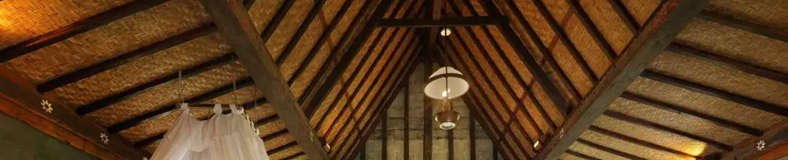

Lampu Klasik Jadul Versi Modifikasi: Perpaduan Antara Keindahan Artistik dan Teknologi LED
Dipublikasikan pada 12 Agustus 2025

Saat berlibur panjang ke kota-kota di Jawa Tengah atau Daerah Istimewa Yogyakarta, kita sering menemukan lampu klasik yang indah menghiasi bangunan tradisional, seperti rumah limasan dan joglo. Lampu klasik ini juga menjadi dekorasi khas di rumah tradisional Betawi, seringkali digantung di teras, ruang tamu, atau di tengah ruangan utama.
Lampu klasik hadir dalam beragam bentuk dan bahan, mulai dari tembaga, kaca, hingga kuningan. Desain awalnya memang dibuat untuk menerangi ruangan secara artistik menggunakan cahaya api yang berasal dari bahan bakar minyak tanah yang merambat melalui sumbu. Bayangkan betapa indahnya pencahayaan api yang menawan, berpadu dengan suasana hangat rumah tradisional berbahan kayu.
Keunggulan dan Modifikasi Lampu Klasik dengan LED
Saat ini, banyak lampu klasik yang telah dimodifikasi. Sumber cahaya api yang otentik kini digantikan oleh lampu LED. Kelebihan utamanya, tentu saja lampu klasik LED dapat menghasilkan cahaya yang jauh lebih terang dan hemat energi.
Meskipun begitu, beberapa orang mungkin tetap menyukai suasana otentik dari pencahayaan api. Apapun pilihannya, lampu klasik tetap merupakan elemen dekorasi yang indah untuk menciptakan nuansa tradisional di ruangan.
Pada lampu klasik yang diubah menjadi LED, tangki minyak tanah biasanya dibiarkan kosong. Katup pengatur api dan bandul yang digunakan untuk mengatur posisi lampu tetap dipertahankan sebagai elemen dekorasi. Bandul ini seringkali dihiasi dengan ukiran yang sangat artistik. Perpaduan ini menciptakan lampu klasik yang lebih terang, hemat energi, namun tetap mempertahankan keindahan desain aslinya.
Selain itu, kini juga banyak tersedia lampu model klasik yang dibuat dari plastik. Lampu-lampu ini memang sudah dirancang sejak awal untuk menggunakan cahaya lampu LED. Karena bahan yang lebih terjangkau, lampu model klasik ini biasanya ditawarkan dengan harga ratusan ribu saja dan mudah ditemukan di berbagai toko online marketplace.
Video singkat tentang lampu klasik yang dimodifikasi dapat ditonton di bawah ini. Semoga bermanfaat!